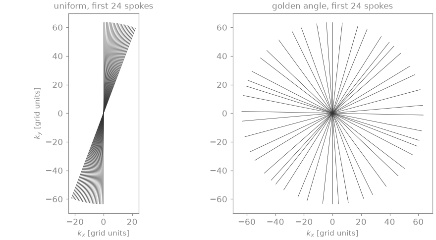
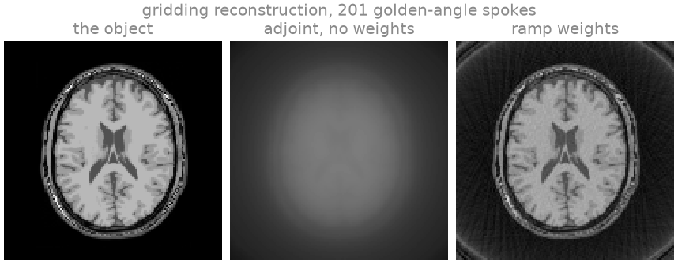
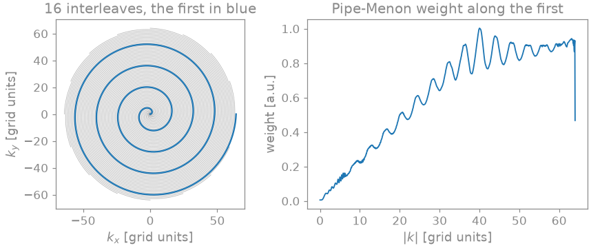
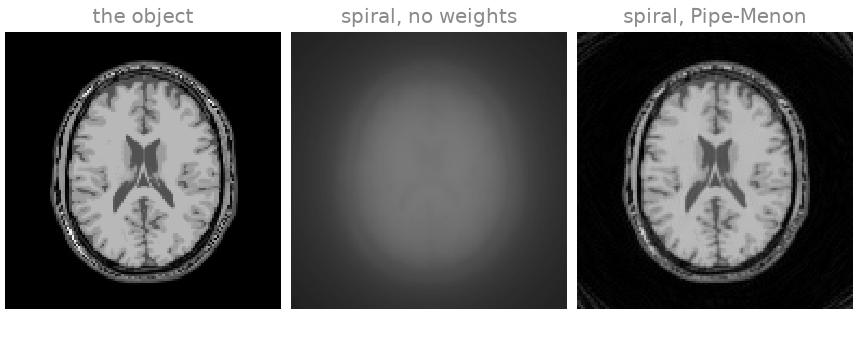
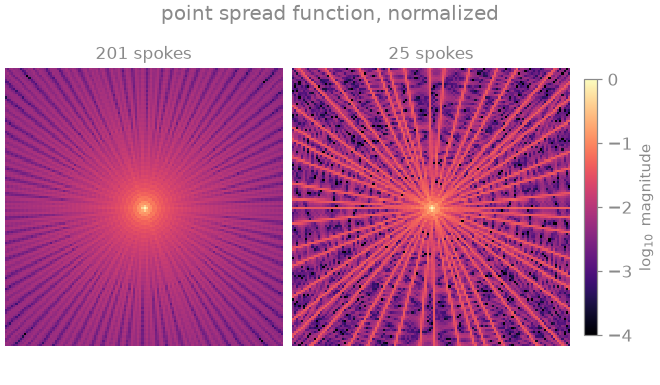
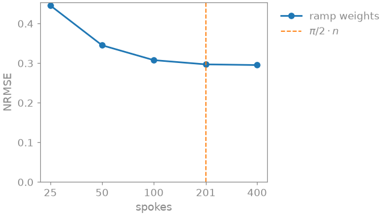
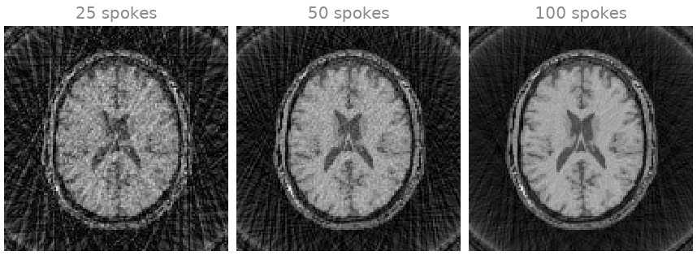

Note
Go to the end to download the full example code.
7. Basics of non-Cartesian imaging#
In lessons 2 to 6 every sample sat on the Cartesian grid, so the FFT and its inverse were all the Fourier transforms you needed. In this lesson you leave the grid. You sample the same brain slice along radial and spiral trajectories, reconstruct it by gridding, and see what each step of that reconstruction does to the image.
The mental model: a radial or spiral readout starts at the centre of k-space and traces a curve through it, so its samples do not lie on a grid and the FFT cannot compute them. The non-uniform FFT (NUFFT) takes its place. Every non-Cartesian transform in bartorch is computed by FINUFFT [2], which evaluates
to a requested tolerance. The sum runs over the \(N\) voxels \(m\) of an image with \(n_d\) voxels along dimension \(d\), and \(k_j\) is the position of sample \(j\) in grid units. Non-Cartesian transform states the conventions and the accuracy.
Learning objectives
Generate radial and golden-angle trajectories in grid units with
bartorch.tools.traj(), and a spiral trajectory by hand.Apply
bartorch.nufft()andbartorch.nufft_adjoint(), and check the transform against the sum that defines it.Explain why a gridding reconstruction needs density compensation, and compute the weights analytically and with
bartorch.estimate_density().Apply the normal operator \(A^H A\) as a convolution, and relate the point spread function (PSF) of an undersampled radial trajectory to its streaks.
Previous: 6. Custom encoding and solver. Next: 8. Radial SENSE, where you remove the streaks of an undersampled radial scan with the coils and a penalty.
Radial trajectory#
The object is the BrainWeb slice of lesson 2 [1] on a 128 by 128 grid, acquired with a single receive coil of uniform sensitivity, so that the trajectory is the only encoding.
A trajectory in bartorch is a tensor of shape (*encoding, shots,
samples, 3) holding the k-space position of every sample in grid units:
one unit is one k-space cell of the image, so a readout of SIZE samples
runs from \(-n/2\) to \(n/2\) for an image of \(n\) voxels. The
last axis is \((k_x, k_y, k_z)\); \(k_z\) is zero throughout here,
and that is what makes the transform two-dimensional.
You can space the spokes of a radial scan in two ways. Uniformly, at \(\pi\) over their number, they tile k-space evenly once all of them are acquired. At the golden angle, every next spoke falls into the largest gap left by the previous ones, so any run of consecutive spokes tiles k-space nearly evenly [3]. That is what lets you cut a golden-angle scan into frames after you have acquired it, as the Tour Dynamic golden-angle radial MRI does.
import time
import torch
import bartorch
import bartorch.tools as bt
from bartorch import linop
SPOKES = 201 # pi/2 * SIZE: enough spokes not to undersample the edge
uniform = bt.traj(readout=SIZE, spokes=SPOKES, radial=True)
golden = bt.traj(readout=SIZE, spokes=SPOKES, radial=True, golden=True)
print(f"trajectory {tuple(golden.shape)}: (spokes, samples, 3)")

trajectory (201, 128, 3): (spokes, samples, 3)
You see the first 24 spokes of each scan. The uniform ones cover a narrow wedge, because they are spaced for 201 spokes and you would need all of them to fill the disc. The golden-angle ones already spread over every direction.
The transform#
bartorch.nufft() samples an image along a trajectory, and
bartorch.nufft_adjoint() takes samples back onto the grid. Since
FINUFFT computes the transform only to a tolerance, check it once against
the sum that defines it, evaluated by hand in double precision over the
first spoke. That sum is computed without BART or FINUFFT, so it is an
independent reference.
samples = bartorch.nufft(image, golden)
print(f"samples {tuple(samples.shape)}")
spoke = golden[0].real.double() # (samples, 3)
m = torch.arange(SIZE, dtype=torch.float64) - SIZE // 2
my, mx = torch.meshgrid(m, m, indexing="ij")
km = spoke[:, :1] * mx.reshape(1, -1) + spoke[:, 1:2] * my.reshape(1, -1)
fourier = torch.exp(-2j * torch.pi / SIZE * km)
explicit = fourier @ image.reshape(-1, 1).to(torch.complex128) / SIZE
error = (explicit - samples[0]).abs().max() / explicit.abs().max()
print(f"largest relative difference from the sum: {float(error):.1e}")
samples (201, 128, 1)
largest relative difference from the sum: 1.9e-04
The difference sits within the tolerance the transform was planned with: a
thousandth by default, on a grid a quarter larger than the image. That is
meant for reconstruction, where the transform’s error stays small beside the
noise and the undersampling; bartorch.linop.NUFFT takes
oversampling and width when you need more accuracy.
Density compensation#
The adjoint is not the inverse. Every spoke passes through the centre of k-space, so the sample density is highest there and decreases outwards: the sampling density of a radial scan falls as \(1/\lvert k \rvert\). The adjoint sums the samples unweighted, so it overweights the low frequencies. To undo that you weight each sample by the inverse of the sampling density [4], which for radial sampling is the ramp \(\lvert k \rvert\). The clamp keeps a small weight on the samples at the centre, which would otherwise not count at all.
def ramp(trajectory):
"""The radial density compensation, |k| per sample."""
k = torch.linalg.norm(trajectory.real[..., :2], dim=-1, keepdim=True)
return k.clamp(min=0.25).to(torch.complex64)
shape = (SIZE, SIZE)
plain = bartorch.nufft_adjoint(samples, golden, image_shape=shape)
compensated = bartorch.nufft_adjoint(
samples * ramp(golden),
golden,
image_shape=shape,
)

Without weights the image is blurred: it is the object convolved with the PSF of the trajectory, which is broad because the sample density is concentrated at the centre of k-space. With the ramp weights the tissue boundaries are resolved. Neither image recovers what the trajectory never reaches: a radial scan covers a disc, so the corners of the Cartesian k-space are missing whatever the weights are.
Estimated density#
The ramp is the density of an ideal radial trajectory. For any other
trajectory, bartorch.estimate_density() estimates the weights with
the fixed-point iteration of Pipe and Menon [4], which runs on the
same NUFFTs. It takes the coordinates as (..., samples, 2), so you
flatten the spokes into one list of samples and reshape the weights back.
flat = golden.real[..., :2].reshape(-1, 2)
estimated = bartorch.estimate_density(flat, shape)
estimated = estimated.reshape(SPOKES, SIZE, 1).to(torch.complex64)
for name, density in (("ramp", ramp(golden)), ("Pipe-Menon", estimated)):
weighted = samples * density
adjoint = bartorch.nufft_adjoint(weighted, golden, image_shape=shape)
nrmse = bt.nrmse(image.abs(), adjoint.abs(), scaled=True)
print(f"{name:>10} NRMSE {nrmse:.3f}")
ramp NRMSE 0.297
Pipe-Menon NRMSE 0.278
For a radial trajectory the two weightings give similar errors, and both include the corners the disc does not cover. The estimate is needed where no closed form is available, as for a spiral.
Spiral trajectory#
bartorch.tools.traj() does not generate spirals, so you write one
yourself: sixteen Archimedean interleaves reaching \(\pm n/2\), each
with \(n/32\) turns so that neighbouring turns of the whole set are one
grid unit apart (the Nyquist spacing), and 1024 samples per interleaf.
INTERLEAVES, READOUT = 16, 1024
progress = torch.linspace(0.0, 1.0, READOUT)
radius = SIZE / 2 * progress
turns = SIZE / (2 * INTERLEAVES)
arms = []
for arm in range(INTERLEAVES):
angle = 2 * torch.pi * (turns * progress + arm / INTERLEAVES)
kx, ky = radius * torch.cos(angle), radius * torch.sin(angle)
arms.append(torch.stack([kx, ky, torch.zeros(READOUT)], dim=-1))
spiral = torch.stack(arms) # (interleaves, samples, 3)
spiral_samples = bartorch.nufft(image, spiral)
flat = spiral[..., :2].reshape(-1, 2)
spiral_density = bartorch.estimate_density(flat, shape)
spiral_density = spiral_density.reshape(INTERLEAVES, READOUT, 1)
spiral_density = spiral_density.to(torch.complex64)
spiral_plain = bartorch.nufft_adjoint(spiral_samples, spiral, image_shape=shape)
spiral_compensated = bartorch.nufft_adjoint(
spiral_samples * spiral_density, spiral, image_shape=shape
)
spirals = {"no weights": spiral_plain, "Pipe-Menon": spiral_compensated}
for name, adjoint in spirals.items():
nrmse = bt.nrmse(image.abs(), adjoint.abs(), scaled=True)
print(f"spiral, {name:>10} NRMSE {nrmse:.3f}")


spiral, no weights NRMSE 0.693
spiral, Pipe-Menon NRMSE 0.089
The weight grows with \(\lvert k \rvert\): the interleaves stay a constant distance apart while each sample covers a longer stretch of arc, so the samples are densest at the centre. It ripples with the period of the turns, levels off in the outer part of k-space, and drops over the last samples, where the outermost turn has no neighbour outside it. Without the weights the spiral image is a low-contrast blur, as the radial one was; with them the tissue contrast and the edges are restored, and the NRMSE printed above drops accordingly.
The normal operator#
An iterative reconstruction applies \(A^H A\) once per iteration, and
for a NUFFT that costs a forward and an adjoint transform. Alternatively,
\(A^H A\) is a convolution of the image with the PSF, which is computed
once on a grid twice the size of the image [5] (the Toeplitz
embedding). bartorch.linop.NUFFT is the transform as an operator,
and A.gram() applies its normal operator as that convolution. The
timing below compares both forms:
A = linop.NUFFT(golden, image_shape=shape)
repeats = 5
start = time.perf_counter()
for _ in range(repeats):
toeplitz = A.gram()(image)
convolution = (time.perf_counter() - start) / repeats
start = time.perf_counter()
for _ in range(repeats):
pair = A.H(A(image))
transforms = (time.perf_counter() - start) / repeats
difference = (toeplitz - pair).abs().max() / pair.abs().max()
print(f"A^H A as a convolution {1e3 * convolution:6.1f} ms")
print(f"A^H A as two transforms {1e3 * transforms:6.1f} ms")
print(f"relative difference {float(difference):.1e}")
A^H A as a convolution 0.8 ms
A^H A as two transforms 0.7 ms
relative difference 2.7e-03
The two agree to a small multiple of the transform’s tolerance, and the convolution is the faster of the two.
The point spread function#
bartorch.tools.psf() computes that PSF on its own: the adjoint
reconstruction of a point object sampled along the trajectory. The
reconstructed image is the object convolved with it. Compare the full scan
with one of an eighth of the spokes:

On a logarithmic scale, the PSF of the full scan is a sharp central peak on a low, even skirt. With an eighth of the spokes the skirt breaks up into bright lines radiating from the centre. Convolving the object with this PSF produces the streaks of an undersampled radial image.
Exercise: angular undersampling#
Repeat the gridding reconstruction with the ramp weights for fewer and more spokes than 201, and compare the error and the images:
counts = (25, 50, 100, 201, 400)
scores, images = [], {}
for count in counts:
trajectory = bt.traj(readout=SIZE, spokes=count, radial=True, golden=True)
acquired = bartorch.nufft(image, trajectory)
gridded = bartorch.nufft_adjoint(
acquired * ramp(trajectory),
trajectory,
image_shape=shape,
)
scores.append(bt.nrmse(image.abs(), gridded.abs(), scaled=True))
images[count] = gridded


Below 201 spokes the error rises with every halving, and the images show
why: streaks across the whole field of view, denser and brighter the fewer
spokes you keep. Above 201 the error barely moves: undersampling no longer
limits it, and what remains includes the corners of k-space the disc never
covers. Try the same with uniform spokes (drop golden=True), or with
fewer spiral interleaves.
As a spec#
What this lesson built, stated the way you would ask an agent for it:
With bartorch, sample a 128x128 complex image along a 2D golden-angle
radial trajectory of 201 spokes of 128 samples (bt.traj, grid units),
with bartorch.nufft, and check one spoke against the explicit DFT in
float64. Reconstruct by gridding with bartorch.nufft_adjoint, without
weights, with the ramp |k| (clamped at 0.25) and with
bartorch.estimate_density, and report each NRMSE. Repeat for a
16-interleaf Archimedean spiral of 1024 samples. Time linop.NUFFT's
A.gram() against A.H(A(x)), and compare bt.psf for 201 and 25 spokes.
References#
Total running time of the script: (0 minutes 1.210 seconds)